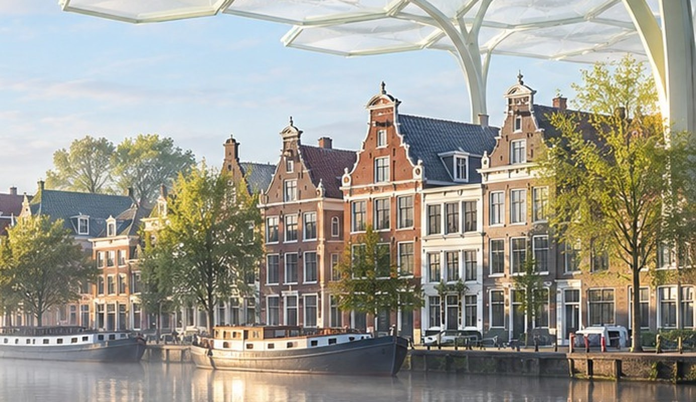

Compliance
Compliance Bedrijfsdata
Bedrijfsdata00 — CAPILEX
Zakelijke financiering met vastgoed als basis.

Capilex verbindt ondernemers die financiering zoeken met investeerders, met Nederlands vastgoed als onderpand.
Ondernemers krijgen snel een zakelijke lening van € 12.500 tot € 200.000, beoordeeld op onderpand, onderneming en ondernemer. Investeerders financieren die leningen via obligaties met een vaste rente, met het vastgoed als zekerheid.
- Voorstel binnen één werkdag
- Altijd vastgoed als onderpand
- Vaste rente voor investeerders
Op deze pagina: hoe lenen werkt, de zekerheden, en wat investeerders krijgen.
Naar capilex.com ↗01 — CAPILEX
Financiering als
de bank afhaakt.
Voor ondernemers die snel financiering nodig hebben en bij de bank vastlopen. Capilex kijkt vooral naar wat een ondernemer nu kan inbrengen: de overwaarde op vastgoed. Jaarcijfers zijn meestal niet nodig.
financiering met vastgoed als onderpand
tot een voorstel
in beginsel, met optie tot verlenging
van aanvraag tot uitbetaling
Voor mkb-ondernemers met KvK-inschrijving en overwaarde op een bedrijfspand, beleggingspand of eigen woning.
02 — CAPILEX
Zo snel gaat het
Na een aanvraag beoordeelt Capilex onderpand, onderneming en ondernemer. Binnen één werkdag volgt een voorstel op maat, met alle kosten vooraf in beeld. Na akkoord legt de notaris de hypotheek vast; het bedrag staat uiterlijk de dag vóór het passeren klaar.
- 1AanvragenBedrag en gegevens invullen
- 2VoorstelBinnen één werkdag, kosten vooraf
- 3Dossier afrondenStukken, controles en akkoord
- 4Notaris en uitbetalingBedrag staat klaar vóór het passeren
Eén vast aanspreekpunt, alle kosten vooraf in beeld.
Beoordeeld in een eigen acceptatie- en beoordelingssysteem, met data via Compadex en klantonderzoek via RiskResolve. Allemaal eigen software.
03 — CAPILEX
Zekerheden van de kredietnemer
Elke lening rust op vastgoed. Daarop komt een hypotheekrecht, ingeschreven bij het Kadaster, meestal aangevuld met een persoonlijke borgstelling. Zo is vooraf voor iedereen duidelijk wat er gebeurt als het tegenzit.
- Hypotheekrecht op het vastgoed: inschrijving bij het Kadaster, bij voldoende overwaarde.
- Persoonlijke borgstelling, eventueel door een derde met vastgoed.
- Partnertoestemming waar nodig.
- Eventueel aanvullende pandrechten op bedrijfsmiddelen en vorderingen.

Onderpand · Voorbeeldstraat 1Hypotheekrecht · inschrijving
AFSCHRIFT · VOORBEELDAkte van hypotheekstelling
Heden verscheen voor mij, mr. A. Voorbeeld, notaris te Voorbeeldstad: de kredietnemer, Bakkerij Voorbeeld B.V., en Capilex als geldverstrekker.
- Capilex verstrekt de onderneming een zakelijke lening.
- Tot zekerheid krijgt Capilex een recht van hypotheek op het pand.
- De notaris schrijft de hypotheek in bij het Kadaster. Zo is de zekerheid openbaar en gaat zij voor latere schuldeisers.
- Lost de onderneming niet af, dan mag het pand worden verkocht; de lening wordt uit de opbrengst voldaan.
- Is alles terugbetaald, dan wordt de hypotheek doorgehaald.
De notaris
Voorbeeldstad, ingeschreven Kadaster04 — CAPILEX
Voor investeerders
Investeerders financieren de leningen via obligaties op naam, met een vaste rente die per kwartaal achteraf wordt uitgekeerd. Elke propositie heeft een eigen looptijd en een grens voor de lening ten opzichte van de onderpandwaarde: hoe lager die grens, hoe ruimer de dekking.
Defensief
3 jaar
Lening maximaal 80% van de onderpandwaarde
Neutraal
4 jaar
Maximaal 85%
Offensief
5 jaar
Maximaal 90%
Exclusief
Op maat, met persoonlijke relatiebeheerder
AgriPlus
Voor agrarische families na verkoop of beëindiging van het bedrijf
Vanaf € 100.000, in stappen van € 25.000; Exclusief en AgriPlus vanaf € 1.000.000.
Obligaties op naam in een register, met een eigen uitgevende instelling per propositie en vaste rente, per kwartaal achteraf uitgekeerd.
Bekijk de proposities op capilex.com ↗05 — CAPILEX
Rendement met
stenen eronder.
Investeerders verkrijgen via Capilex hypotheekrechten, pandrechten en borgtochten. Geen belofte op papier, maar een inschrijving bij het Kadaster, onder elke lening.
- Hypotheekrechten. Op Nederlands vastgoed, gevestigd bij de notaris.
- Pandrechten. Waar nodig op bedrijfsmiddelen en vorderingen.
- Borgtochten. De ondernemer staat er ook persoonlijk voor.
Zekerheden beperken het risico, ze nemen het niet weg. Een investeerder kan de inleg geheel of gedeeltelijk verliezen.
€
Investeerder6,0 – 7,0% vaste rente, per kwartaal
Capilex ExclusiefOp maat, vanaf € 1.000.000InlegZekerheidsrechten
Beoordeelt elke lening en bewaakt de zekerhedenLeningVia de notaris
Nederlands vastgoed
LeningOverwaarde
- Hypotheekrechten
- Pandrechten
- Borgtochten
06 — CAPILEX
Voor wie en vragen
Ondernemers
Nederlandse mkb-ondernemers met KvK-inschrijving en overwaarde op een bedrijfspand, beleggingspand of eigen woning.
Investeerders
Particulieren en zakelijke partijen die de opzet, voorwaarden en risico’s van obligaties willen begrijpen.
Partners en adviseurs
Borgen, partners, notarissen en hypotheekhouders die het dossier en de zekerheden begeleiden.
Controleerbaar
- Rechtspersoon
- Capilex B.V.
- KvK
- 85143286
- Adres
- Dorpsstraat 1, 5261 CJ Vught
- Rol Lex
- Oprichter
- Officiële site
- capilex.com ↗
- Stand
- 1 november 2026
Vragen
De kortste antwoorden op wat ondernemers ons het vaakst vragen. Klik op een vraag voor de uitleg.
Voor wie is een Capilex-financiering?
Voor Nederlandse mkb-ondernemers die bij de KvK staan ingeschreven en overwaarde hebben op onroerend goed, zoals een bedrijfspand, een beleggingspand of de eigen woning. Ook starters en zzp’ers kunnen aanvragen, zolang er vastgoed als onderpand is.
Hoeveel kan ik lenen?
Van € 12.500 tot € 200.000. Hoeveel precies hangt af van de overwaarde op het vastgoed en van wat de onderneming kan dragen. Binnen een werkdag is duidelijk wat mogelijk is.
Kan het zonder onderpand?
Nee. Er is altijd vastgoed nodig, al mag dat ook van iemand zijn die borg staat.
Zijn jaarcijfers nodig?
Meestal niet. Capilex beoordeelt het onderpand, de onderneming en de ondernemer. In plaats van te wachten op jaarcijfers kijken we, met toestemming van de ondernemer, via PSD2 mee in de zakelijke bankrekening. Zo zien we de actuele geldstromen in plaats van een momentopname van vorig jaar.
Hoe bepalen jullie of een lening verantwoord is?
We combineren drie bronnen. Via PSD2 lezen we, met toestemming van de ondernemer, de transacties van de zakelijke rekening: omzet, vaste lasten en bestaande verplichtingen. Daarnaast raadplegen we externe bronnen, zoals het Handelsregister van de KvK, het Kadaster, het insolventieregister en kredietinformatie. En we kijken naar het onderpand zelf: waarde, eigendom en bestaande hypotheken. Samen geeft dat een eerlijk beeld van de kredietwaardigheid, sneller dan met jaarcijfers alleen.
Is PSD2 veilig?
Ja. PSD2 is de Europese regeling waarmee een rekeninghouder een partij tijdelijk leestoegang tot de bankrekening geeft, via de eigen bank. De ondernemer logt in bij de bank, geeft toestemming en kan die altijd intrekken. Wij kunnen alleen meekijken, nooit betalingen doen.
Hoe verloopt de aanvraag?
De ondernemer vraagt aan met bedrag en gegevens. Binnen een werkdag volgt een voorstel met alle kosten vooraf. Daarna ronden we samen het dossier af: bankinzage, identificatie en de stukken over het onderpand. Tot slot passeert de akte bij de notaris en wordt de financiering uitbetaald.
Waarom een notaris?
De lening wordt gedekt door een hypothecaire inschrijving, en die wordt via een notariële akte gevestigd.
Wanneer staat de financiering klaar?
Uiterlijk de dag vóór de passeerafspraak op de derdengeldrekening van de notaris.
Wat gebeurt er na aflossing?
De notaris haalt de inschrijving bij het Kadaster door (royement) en Capilex bevestigt de aflossing schriftelijk.
07 — CAPILEX
Verder met
Capilex.
Capilex verbindt ondernemers en investeerders via financiering met vastgoed als onderpand.
Terug naar Lex Gielen ↗